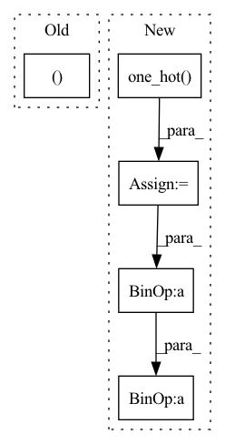

Pattern ID :2286

Before Change
quantizeds.append(deTransformed)
codes.append(sample.argmax(-1).permute(1, 0).reshape(n, h, w))
logits.append(logit.reshape(n, h, w, k))
return quantizeds, codes, logits
class VQuantizer(nn.Module):
def __init__(self, k: List[int], cin: int, rate: float = 0.1):
After Change
soft = (logit / temperature).softmax(-1)
if hard:
hard = logit.argmax(-1)
hard = F.one_hot(hard, k)
sample = (hard - soft).detach() + soft
else:
sample = soft
// sample = F.gumbel_softmax(logit, temperature, hard)
In pattern: SUPERPATTERN
Frequency: 3
Non-data size: 5
Instances
Fragment ID: 7947257
Project Name: xiaosu-zhu/mcquic
Commit Name: 96e69f8763c2cf2c9cf0695159db17ddf4e0c857
Time: 2021-02-15
Author: xiaosu.zhu@outlook.com
File Name: src/mcqc/models/quantizer.py
M Class Name: TransformerQuantizer
N Class Name: TransformerQuantizer
M Method Name: forward(4)
N Method Name: forward(4)
M Parent Class: nn.Module
N Parent Class: nn.Module
M File Name: src/mcqc/models/quantizer.py
N File Name: src/mcqc/models/quantizer.py
M Start Line: 280
M End Line: 335
N Start Line: 280
N End Line: 339
'>
Before Change
encoding_indices = soft_one_hot.argmax(dim=1)
return z_q, loss, (None, None, encoding_indices)
After Change
loss = self.kl_weight * torch.sum(qy * torch.log(qy * self.num_tokens + 1e-10), dim=1).mean()
encoding_indices = soft_one_hot.argmax(dim=1)
encodings = F.one_hot(encoding_indices, self.num_tokens).type(z.dtype)
avg_probs = torch.mean(encodings, dim=0)
perplexity = torch.exp(-torch.sum(avg_probs * torch.log(avg_probs + 1e-10)))
return z_q, loss, (perplexity, encodings, encoding_indices)
'>
Fragment ID: 7947259
Project Name: tgisaturday/dalle-lightning
Commit Name: 39e8b24fa405a4320d7c683e7054ae18ef4563f4
Time: 2021-07-28
Author: jamesk1228@gmail.com
File Name: pl_dalle/modules/vqvae/quantize.py
M Class Name: GumbelQuantizer
N Class Name: GumbelQuantizer
M Method Name: forward(2)
N Method Name: forward(2)
M Parent Class: nn.Module
N Parent Class: nn.Module
M File Name: pl_dalle/modules/vqvae/quantize.py
N File Name: pl_dalle/modules/vqvae/quantize.py
M Start Line: 127
M End Line: 135
N Start Line: 127
N End Line: 138
'>
Before Change
Returns:
output <torch.Tensor>: (batch_size,) or ()
batch_size, num_classes = input.size()
scale, margin = self.scale, self.margin
eps = self.eps
After Change
cos_phi = torch.where(cos_th > self.cos_pi_m, cos_th - margin, cos_phi) // (batch_size, num_classes)
// For non-target class
mask = F.one_hot(target, num_classes=num_classes) // (batch_size, num_classes)
input = scale * (mask * cos_phi + (1.0 - mask) * cos_th)
loss = F.cross_entropy(input, target, reduction="none")
if batch_mean:
'>
Fragment ID: 7947248
Project Name: tky823/dnn-based_source_separation
Commit Name: a4bde6a5794ce4ec526ff846e07a4de4de24ab04
Time: 2022-02-10
Author: delta9guitar97@gmail.com
File Name: src/criterion/metric_learn.py
M Class Name: AdditiveAngularMarginLoss
N Class Name: AdditiveAngularMarginLoss
M Method Name: forward(4)
N Method Name: forward(4)
M Parent Class: nn.Module
N Parent Class: nn.Module
M File Name: src/criterion/metric_learn.py
N File Name: src/criterion/metric_learn.py
M Start Line: 168
M End Line: 184
N Start Line: 181
N End Line: 199